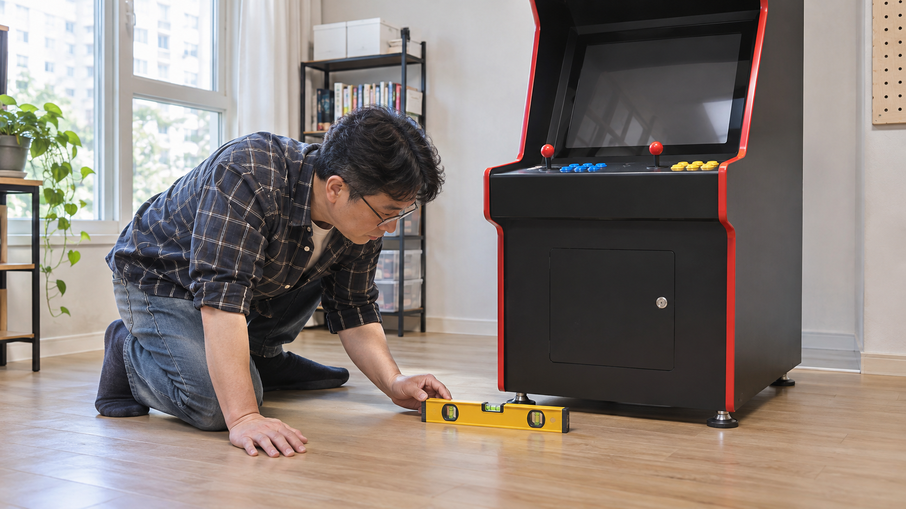
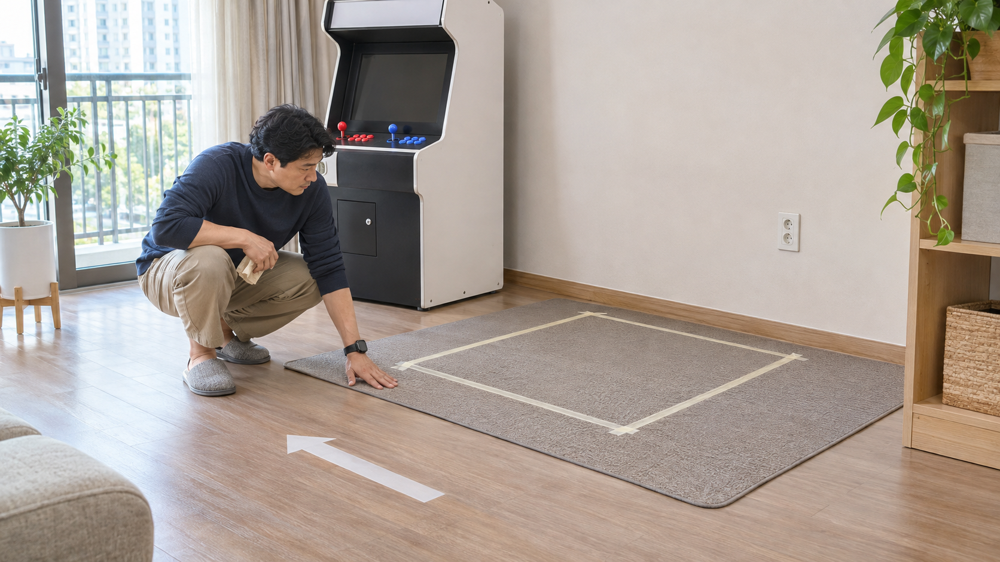

오락기 설치 위치의 바닥은 기기가 흔들리지 않도록 평평하고 단단한지, 물기나 들뜬 부분이 없는지 먼저 확인해야 합니다. 받침부가 모두 바닥 또는 평평한 보호 매트에 닿는지 살펴보고, 설치 뒤에는 조작할 때 흔들림과 케이블 눌림이 없는지 다시 확인하세요. 바닥 상태나 제품 받침 구조가 불분명하면 임의로 받침을 끼우기보다 정확한 제품명과 설치 사진으로 판매자에게 문의하세요.

바닥이 평평하고 흔들림이 없는지 확인하세요
오락기를 놓기 전에 설치 예정 위치를 비우고 바닥의 기울어짐, 들뜸, 갈라짐, 이물질을 눈으로 확인하세요. 제품을 놓은 뒤에는 받침부가 모두 닿는지 살펴보고 조작부를 가볍게 사용하는 범위에서 흔들리거나 한쪽이 뜨지 않는지 확인하세요. 흔들림이 있으면 종이·나무 조각 같은 임시 받침을 끼우지 말고 제품 안내에 맞는 조절 방법이나 설치 지원 여부를 확인하세요.
바닥의 평평함과 모든 받침부의 접촉 상태는 설치 뒤 흔들림을 판단하는 첫 기준입니다.
노리박스 공개 제품 목록에는 20+ 테이블형, 24+ 좌식형, 27+와 32+ 계열 제품, TV 연결형 분리기통이 각각 안내되어 있습니다. 제품 형태에 따라 바닥과 닿는 면과 조작 위치가 다를 수 있으므로 다른 모델의 받침 위치를 그대로 따라 하지 말고 구매한 제품의 구조를 기준으로 확인하세요. 설치 면적을 재는 순서는 가정용 오락기 설치 공간 측정 방법에서 볼 수 있습니다.
바닥의 물기와 표면 상태를 살펴보세요
설치 예정 위치와 벽 가까운 모서리에 물기, 결로 흔적, 청소 뒤 남은 습기가 없는지 확인하세요. 바닥 표면에 전선 조각이나 작은 물건이 남아 있으면 받침부가 고르게 닿지 않을 수 있으므로 설치 전에 정리하세요. 물기가 반복해서 생기는 위치라면 원인을 확인하기 전까지 전원을 연결하거나 기기를 놓지 말고 다른 실내 위치를 검토하세요.
설치 전 바닥의 물기와 이물질을 확인하면 받침부가 고르게 닿는지 더 정확히 살펴볼 수 있습니다.
- 설치 예정 면적과 벽 모서리의 물기 확인
- 바닥의 들뜸·갈라짐·이물질 확인
- 문과 의자, 사람의 이동 경로 확인
- 전원선과 화면선이 받침부 아래로 지나가지 않는지 확인

받침면과 보호 매트를 제품에 맞춰 확인하세요
바닥 보호 매트를 사용한다면 제품의 모든 받침부를 안정적으로 받치고 가장자리가 말리거나 접히지 않는 평평한 상태인지 확인하세요. 매트가 너무 작아 일부 받침만 걸치거나 조작할 때 함께 밀리면 사용을 멈추고 제품 안내와 설치 환경을 다시 확인하세요. 바닥 보호만을 이유로 통풍구를 가리거나 케이블을 매트 아래에 눌러 두지 마세요.
보호 매트는 제품의 모든 받침부를 같은 높이로 지지하고 이동 통로를 방해하지 않아야 합니다.
노리박스 제품 목록에는 오락기 전용받침대가 별도 상품으로 안내되어 있으며, 좌식형·스탠드형 등 본체 형태도 나뉘어 있습니다. 받침대나 매트를 선택할 때는 제품명과 실제 받침면을 기준으로 확인하고, 관련 기준은 가정용 오락기 의자와 받침대 고르는 방법도 참고하세요.
설치 뒤 흔들림과 이동 경로를 다시 점검하세요
설치가 끝나면 화면과 조작부를 실제 사용할 위치에서 살펴보고, 버튼을 누르거나 조이스틱을 움직일 때 본체가 흔들리거나 밀리지 않는지 확인하세요. 문을 열거나 의자를 빼고 청소 도구를 움직일 때 기기와 케이블에 닿지 않는지도 점검하세요. 흔들림이나 바닥 자국이 새로 보이면 전원을 끈 뒤 제품명, 바닥 전체, 받침부 사진을 준비해 판매자에게 문의하세요.
설치 완료 뒤에는 조작할 때의 흔들림과 사람·의자의 이동 경로를 같은 자리에서 다시 확인하세요.
처음 설치 뒤 기능과 상태를 확인하는 순서는 오락기 설치 뒤 처음 점검할 것에서 이어서 볼 수 있습니다. 현재 노리박스 오락실게임기와 관련 받침대는 제품자세히보기에서 확인하세요.